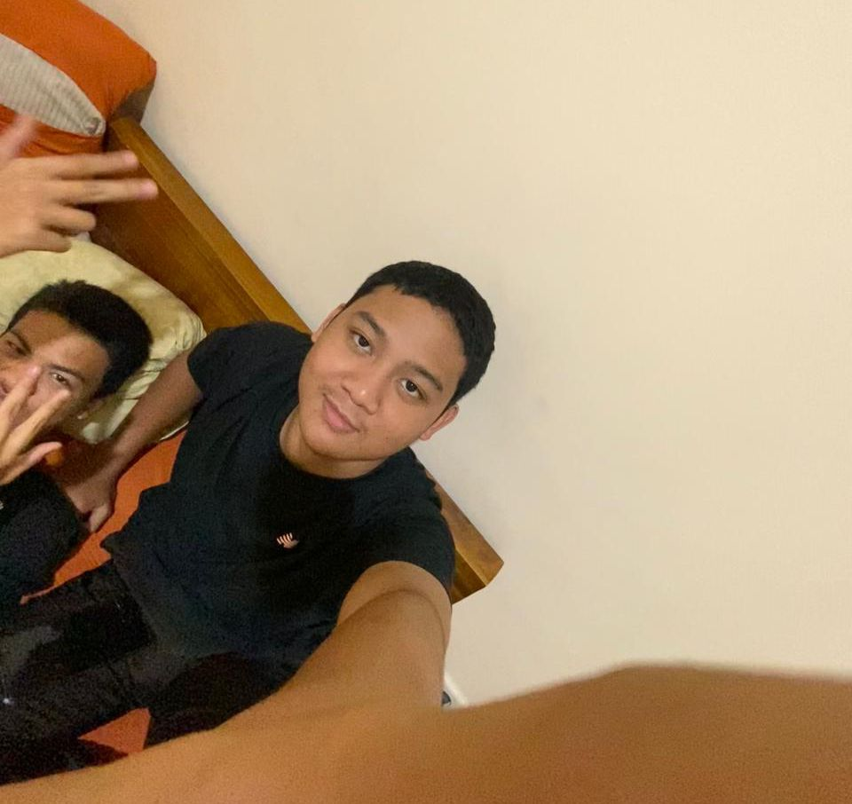

Selamat datang di halaman Developers! Website ini hadir bukan karena inisiatif, melainkan sanksi dari pelanggaran anak-anak RPL yang katanya terlalu banyak acara. Sebagai hukuman, kami disuruh bikin website. Ternyata, dari yang tadinya ogah-ogahan malah jadi calon-calon developer handal... walaupun masih sering ngecek TikTok di sela-sela ngoding. 😅 Berikut ini adalah para pengembang yang dipaksa eh, diberikan kesempatan untuk memperbaiki diri melalui pembuatan website ini:
Aura Anastasya
Developers page
Procrastinator sejati. Jagonya ngulur waktu, baik di kehidupan nyata maupun saat nge-submit tugas. Tapi jangan khawatir, kalau ngoding, cuma telat 1-2 hari kok!

Azka Putra Aulia
Github Operator
Eksperimen pertama di bidang konstruksi... sayangnya, gagal total. Setelah ‘berhasil’ menghancurkan wastafel, sekarang belajar menghancurkan bug di kode.

Dimas Aryo Witjaksono
Teachers page
Spesialis hardware testing—mulai dari komputer sampai wastafel. Wastafel sekolah jadi korban pertama, tapi tenang, sekarang cuma mainan keyboard kok (semoga).
Fadhil Muhammad Rahman
Home page CSS
Ahli dalam memecahkan batas—terutama batas ketahanan wastafel. Sekarang, batas yang dipecahkan adalah bug dalam kode.
Iqbal Hilmi Wibowo
Teachers page
Master stress test—PC lab nggak kuat sama tekanannya. Kaca pecah, tapi tenang, skill ngoding-nya nggak ikut pecah.

Muhammad Divo Aziland
Workspace
Dulu pergi ke tongkrongan, sekarang pergi ke localhost. Sama-sama nongkrong, tapi bedanya kali ini nongkrong di dunia IT.
Muhammad Faiz Zhafran
About page
MacGyver wannabe: bisa bawa segala sesuatu yang nggak seharusnya ke sekolah. Sekarang bawa laptop dan codingan buat bikin website

Rafa Adya Syafiq
Teachers page
Orang yang bisa bikin wastafel sekolah jadi headline minggu ini. Untung sekarang udah fokus bikin website, bukan proyek destruksi.

Rizky Sugiharto
Home page HTML
Pemain utama dalam drama ‘Tugas Terlambat.’ Dulu telatnya bisa jadi kebiasaan, tapi sekarang, dia lebih suka ‘delay’ error di kode daripada di jadwal tugas.
Safdiza Azizi
UI Design
Kreatif sejak awal. Dulu sih bawa barang-barang terlarang ke sekolah, sekarang bawa bug ke dalam kode. Sama-sama bikin panik, tapi setidaknya lebih aman.

Wildan Izhar Al Haqq
Home page HTML
Terlambat dalam pengumpulan tugas? Hanya sebagai latihan untuk menghadapi ‘bug’ di kode. Sekarang, lebih fokus pada debugging daripada mendebug waktu pengumpulan tugas.
Zaskia Ade Mekka
Members page
Tasnya dulu lebih mirip sama lemari make up daripada tas sekolah. Sekarang, dia bawa laptop dan kode, tapi masih bisa pake ‘highlighter’ buat bug supaya lebih ‘terpancar’.

Reisan Adrefa
CSS Support
Dulu sih bawa kartu Uno ke sekolah, sekarang bawa keahlian coding yang lebih penting. Tapi kalau ada bug, bisa jadi ‘reverse’ dan ‘skip’ ke solusi yang lebih baik.